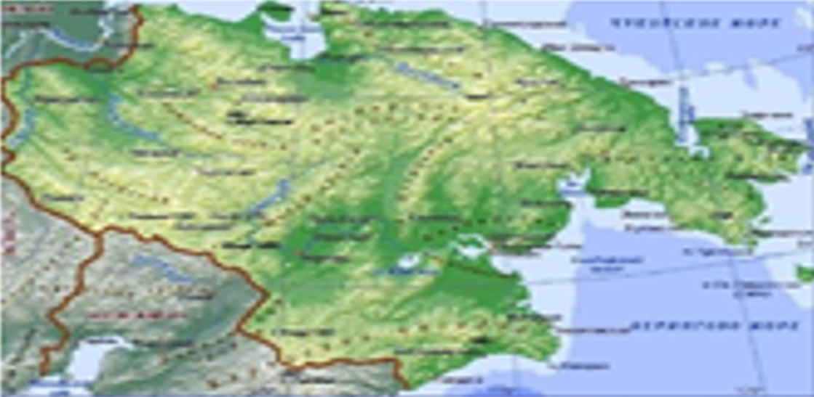
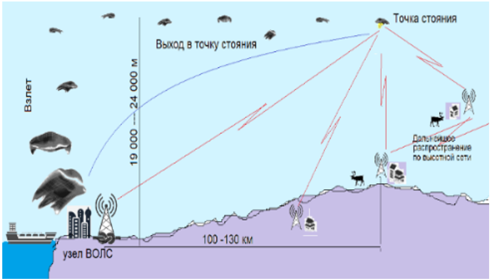
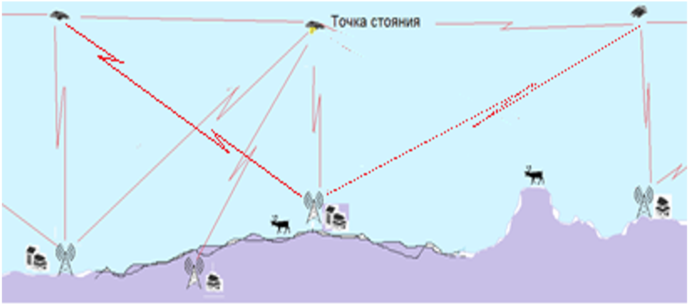
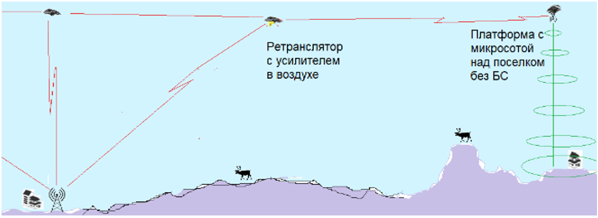

ДОСТУП К ШИРОКОПОЛОСНОМУ ИНТЕРНЕТУ И МОБИЛЬНОЙ СВЯЗИ
В УДАЛЕННЫХ, ТРУДНОДОСТУПНЫХ И МАЛОНАСЕЛЕННЫХ РЕГИОНАХ
С РАЗМЕЩЕНИЕМ АППАРАТУРЫ РАДИОРЕЛЕЙНОЙ СВЯЗИ И
БАЗОВЫХ ТАНЦИЙ НА СТРАТОСФЕРНЫХ ДИРИЖАБЛЯХ
ОБЩАЯ ИНФОРМАЦИЯ

Рис. 1. Чукотский АО
Проект «Доступ» представлен на примере Чукотского АО (площадь. 720 кв км; население 50 тыс чел)
Проект рассмотрен Минцифры РФ и Минобороны РФ
Экспертиза проекта проведена РНИИРС, г. Ростов-на-Дону
Проект носителя защищен в ИАТЭ НИЯУ МИФИ в 2023 году
Системы мобильной связи на основе активных цифровых антенных решеток (АЦАР) разработаны ИИЦТ НИУ БелГУ при участии ООО СНОиИТ
Проект «Доступ», СНОиИТ (с 2021 г. по нат время) с размещением устройств радиорелейной связи (РРС) и базовых станций (БС) на стратосферных дирижаблях выполнен как антитеза проекту Loon, США (2012–21) с базированием БС на дрейфующих стратостатах.
Проект Loon закрыт в январе 2021 году в связи с коммерческой несостоятельностью. Причина закрытия — невозможность оптимального распределения БС при дрейфе стратостатов-носителей в атмосферных потоках над зоной покрытия. Подбор потока носителей успешно выполнялся автоматической инфо системой. Чёткое формирование управляющих команд автоматической информационной системой (АИС) не обеспечивало оперативной реакции и точных маневров носителей и не дало приемлемого результата
Анализом проекта Loon предприятием СНОиИТ определены главные критерии практики управления автоматическими воздухоплавательными аппаратами: минимизация времени реакции аппарата на команду АИС и интервала изменения параметров полета
СНОиИТ выбрана схема расстановки высотных платформ в расчетных координатах по площади покрытия с принудительным удержанием рабочих позиций над поселками, промобъектами и другими зонами скопления абонентов
СРАВНЕНИЕ ПРОЕКТОВ «ДОСТУП» И LOON
Расчетное количество блуждающих аэростатов Loon, необходимое для установления доступа в интернет на территории Чукотского АО, составляет ~ 500 единиц
Система «Доступ» обеспечит стабильную связь на площади Чукотки пятьюдесятью платформами с учетом ротации, резерва и плановых потерь
Вес полезной нагрузки и бортовой система управления полетом и размеры носителя «Доступ» два раза выше, чем у стратостата Loon, но использование российских и минимального количества импортных комплектующих делают стоимость платформы «Доступ» равной стоимости рабочего модуля Loon
Сеть высотных БС Loon требует дополнительного абонентского оборудования
«Доступ» обеспечивает связь через стандартные БС и напрямую на гаджеты абонентов
По мере расширения площади покрытия (новые поселки, месторождения, производства, др) развитие сети производится простым добавлением платформ
Новые модули системы под контролем АИС «Доступ» занимают расчетные позиции и автоматически «прописываются» в сети высотных ретрансляторов и БС
СВЯЗЬ В ПРОЕКТЕ

Рис. 2. Узел на ВОЛС и ближайшая позиция платформы «Доступ»
Стратосферные платформ, сохраняют заданные позиции связи на высоте 18 – 24 тыс м
Платформы образуют высотную сеть прямой РРС-видимости на территории покрытия
На позициях вдоль маршрута Северного морского пути (СМП) платформы «привязаны» к узлам ВОЛС-кабеля «большого» интернета
Сигнал по сети РРС над территорией континентальной Чукотки распространяется по всем платформам, отстоящим на расстояния 200–350 км друг от друга

Рис. 3. Узел на ВОЛС и ближайшая позиция платформы «Доступ»
Каждая платформа ведет обмен информационным потоком с наземными БС поселков и промобъектов или напрямую с абонентами в других зонах доступа
Наземная БС раздает инфо проток, собирает и усиливает сигнал и «поднимает» его на платформы
По сети высотных платформ распространяется усиленный сигнал

Рис. 4. «Раздача» мобильной связи с бортовой БС в удаленном поселке
Пользователи на «континенте» получают доступ к ресурсу «большого» интернета
Это эффективный и экономически оптимальный способом распространения инфо потока, нежели получение сигнала от тех же ВОЛС-узлов по спутниковым каналам
Высотные платформы разработаны на основе системы АЦАР
Модули АЦАР построенных в форме многогранников
Контроллеры активизируют приемно-передающие модули (ППМ) антенных решеток в рабочий сегмент на одной или нескольких плоскостях многогранной контракции, — до 5 лучей одновременно и направляют на антенны наземных БС и соседних платформ
Точная коррекция направления на оппонента связи осуществляется фазовращателями
Энергия боковых «лепестков» диаграммы направленности (ДН) используются как питание соседних секторов антенной системы (квазиоптический принцип возбуждения излучателей), что обеспечивает высокие энергетические показатели системы в целом
При приеме на большом расстояния мощность сигнала на антеннах достаточна для передачи сигнала «вниз» на станцию БС, где происходит усиление для дальнейшей ретрансляции инфо потока по высотной сети
ФУНКЦИИ АВТОМАТИЗИРОВАННАЯ ИНФОРМАЦИОННАЯ СИСТЕМА
— Оптимизация информационных потоков (маршрутизация) мобильной связи
— Пилотирование дирижаблей на маршрутах выхода в расчетные точки, управление при удержании платформами рабочих позиций и при возврате на аэродром, при выполнении полетных и посадочных процедур в нестандартных ситуациях
— Определение координат и высоты платформ
а) с использованием системы ГЛОНАСС и GPS;
б) по сигналам наземных БС с известными координатами;
и) по другим наземным ориентирам
Взаимодействие системы «Доступ» с военными и гражданскими системами связи
АИС останется полностью работоспособной при масштабировании проекта:
— с охватом новых территорий и увеличением числа абонентов сети;
— с расширением качества и спектра предоставляемых услуг связи и интернета;
ДИРИЖАБЛЬ «ДОСТУП» — НОСИТЕЛЬ РЭА СИСТЕМ СВЯЗИ
Стратосферный носитель дирижабль «Доступ» спроектирован на основе многофункциональной концепт-платформы «НЕОФРОН» — высотного комплекса сканирования земной поверхности и радиотелескопа для приема реликтового космического излучения дальнего космоса с высотой стояния, дрейфа, перемещения на высотах 30 тыс м
Функции дирижабля «Доступ» сведены до одной: носителя аппаратуры РРС и БС
Платформа способна к маневрам за счет собственных систем и предназначена для автономной работы на высоте 18000 — 24 000 м
Задачи носителя в проекте:
— вывод платформ в расчетные координаты для создания РР-сети для обеспечения доступа к интернету и мобильной связи на площади покрытияи возврат на аэродром;
— автоматическое сохранение рабочей позиции в заданных координатах:
КОНСТРУКЦИЯ ПЛАТФОРМЫ «ДОСТУП»
Температура воздуха на высоте 18 – 24 тыс м постоянна в течение года ~ –55°C
В едином термозащитном корпусе скомпонованы:
— полезная нагрузка (ПН) — аппаратура РРС и БС;
— блок управления АЦАР;
— блок РЭА управления полетом;
— АкБ, компрессор (Ко), генератор (ЭГ) и другие устройства
Установка корпуса при монтаже возвращает центр тяжести (ц.т.) платформы, смещенный при монтаже солнечных батарей и антенн в геометрический ц.т. дирижабля
Кожух корпуса в форме многогранника с черными и зеркальными гранями имеет три степени свободы вращения (+/- 90°)
Повороты кожуха относительно осей независимы от положения корпуса внутри кожуха, не вызывают смещения ц.т. и служат для ориентации отражающих и поглощающих граней кожуха на солнечный свет и другие источники изучения
Корпус ПН внутри кожуха имеет независимую от кожуха степень свободы, — вращение относительно продольной оси носителя — (+/- 90°).
Поворот корпуса не изменяет ориентации кожуха
Поворот вокруг оси смещает ц.т. корпуса и создает угол крена платформы (+/-45°)
Корпус и кожух имеют степень свободы продольного смещение на ~ 5 м в направлении носовой части, что создает постоянный угол тангажа дирижабля (-45° — -75°) для ориентации солнечных батарей в режиме покоя или пассивного движения (сноса) платформы и изменение угла тангажа (0° — -75°) в режимах активного движении платформы
Заданные тангаж и крен в сочетании со «сбросом» подъемной силы обусловливают пикирование платформы или движение по траектории нисходящей спирали
Эти режимы являются основными способами движения в рабочей зоне при сохранении позиции платформы в зоне устойчивой связи высотного ретранслятора и БС
В центре рабочей зоны платформа увеличивает подъемную силу и выходит в наивысшую точку стояния — приобретает максимальную потенциальную энергию для возврата в зону посредством пикирования после сноса за пределы допустимого отклонения
ЭНЕРГЕТИКА ВЫСОТНОЙ ПЛАТФОРМЫ «ДОСТУП»
Перечень потребителей на борту ВПЛА:
- силовая установка управления углами крена, тангажа и поворотов единого блока – 800 Вт;
- аппаратура радиорелейной связи –200 Вт;
- механизмы управления антеннами радиорелейной связи – 300 Вт;
- аппаратура GPS/ГЛОНАСС – 100 Вт;
- бортовой контроллер – 300 Вт;
- система обогрева ежиного корпуса и вентилятор конвекции оболочки – 300 Вт
Потребляемая мощность платформы – 2 кВт
Учет циклограммы потребления позволяет уменьшить и емкость (вес) аккумуляторов
РАБОЧИЙ ЦИКЛ ВЫСОТНОЙ ПЛАТФОРМЫ «ДОСТУП»
Предполетная сборка носителей, монтаж блоков управления и полезной нагрузки, тестирование, заправка гелием (водородом), взлеты и посадки носителей производится на аэродромах, расположенных на открытых равнинных местах в относительной близости от мест работы платформ и транспортных артерий к портам СМП
При взлете и подъеме на рабочую высоту платформа, управляемая АИС, в воздушных потоках и за счет собственного хода в течение нескольких часов займет расчетную позицию и включится в систему РРС-передачи сигнала по высотной сети
Отработавшая платформа, смененная новой, возьмет курс на аэродром и осуществит штатную посадку посредством закачки воздушного балласта
При экстренной посадке стравливается рабочий газ, и платформа совершит неуправляемое более жесткое приземление
В случае отказа систем или другой аварийной ситуации предусмотрен отстрел и спуск единого корпуса с аппаратным блоком на парашюте. Возможно приводнение платформы с сохранением работоспособности по проведении технического обслуживания (ТО)
Группа подбора определит место посадки и осуществит поиск и доставку платформы, предусмотрен бортовой аварийный передатчик мощностью 1 Вт с автономным питанием
Аэродромы базирования имеет полный комплекс работы и обслуживания платформ:
— технико-эксплуатационная часть с диспетчерской и аппаратной связи
— ангар для работы с оболочками со спецоборудованием и средствами механизации
— техника доставки носителей и жизнеобеспечения
— ангар-гараж автотехнического обслуживания (АТО)
— склады хранения топлива, рабочего газа, продуктов
— офис и помещение АИС
— жилые помещения
МАТЕРИАЛ ОБОЛОЧКИ ДИРИЖАБЛЯ
Тонкий и прочный материал кардинально снижает вес воздухоплавательного аппарата
Оболочка имеет аэродинамичной форму «крыло» с показателями прочности и надежности носителя «Доступ» в рамках габаритов оболочки традиционной формы
На рынке отечественных материалов, пригодных для производства оболочек воздухоплавательным летательных аппаратов, не представлено
В проекте Loon использовался материал на основе сверхвысокомолекулярного полиэтилена – СВМПЭ (ultra-high molecular weight polyethylene, UHMWPE)
В октябре 2015 года в КНР произведен запуск высотного дирижабля с оболочкой на основе СВМПЭ-материала
При отечественном серийном изготовлении воздухоплавательных оболочек будет целесообразным организовать российское производство материала СВМПЭ
Технология потребует организации специализированного предприятия с формированием первичной структуры нити СВМПЭ — филамента параметром 3 – 5 мкм
Технология «филамент–нить» во многом сложнее и затратнее производства изготовления объемных СВМПЭ–изделий (бронезащита, футеровка...)
Рентабельность такого производства напрямую зависит от объемов выпуска
Обеспечить оптимальные объемы производства поможет использование СВМПЭ-материала) при изготовлении (помимо воздухоплавательных оболочек) изделий хозяйственного и оборонного применения: тентов, воздухоопорных ангаров, палаток...)
Настоящее производство будет оправдано повышением качества традиционных изделий и кардинальным уменьшением их веса и размеров (например, стандартная армейская палатка будет весить 1 – 2 кг и разместиться в кармане рюкзака)
Автор-конструктор платформы «Доступ»
Генеральный директор ООО СНОиИТ П. А. Федоров